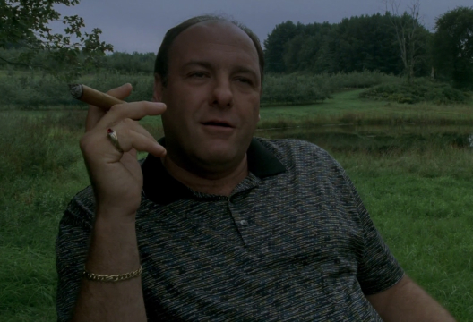

Тони Сопрано - босс криминальной семьи ДиМео
Тони служил Капо, который был невероятно близок со своим отцом и дядей Коррадо "Младшим" Сопрано, но отношения были напряженными, когда недовольный и впавший в маразм Младший становился все более маргинализированным в организации по мере того, как расследование ФБР его деятельности усиливалось. Когда его влияние уменьшилось, он приказал убить Брендана Филоне, что привело Тони в ярость. Более того, позже он сговорился с собственной матерью Тони, Ливией Сопрано, убить Тони из-за того, что он поместил их обоих в сообщество пенсионеров. После неудачного покушения на жизнь Тони, Джуниора арестовывают, в результате чего Тони захватывает власть и становится уличным боссом.
Теперь, обладая значительно большей властью, Тони постепенно приходится управлять самой могущественной преступной организацией Северного Джерси, поддерживая ее надлежащее функционирование и сводя диссонанс к минимуму.
Несмотря на уровень местной дурной славы, Тони публично представлял себя консультантом по управлению отходами в Barone Sanitation, одном из многих прикрытий его преступных предприятий. Тони использовал своего предполагаемого племянника Кристофера Молтисанти в качестве буфера между ним и его капо в течение последних двух сезонов, чтобы оградить себя от ФБР. Эта уловка закончилась, когда Тони убил Молтисанти в автомобильной аварии. Кристофер был за рулем под кайфом от героина и съехал с дороги, чтобы избежать столкновения со встречной машиной. Машина съезжает с холма и разбивается вертикально.